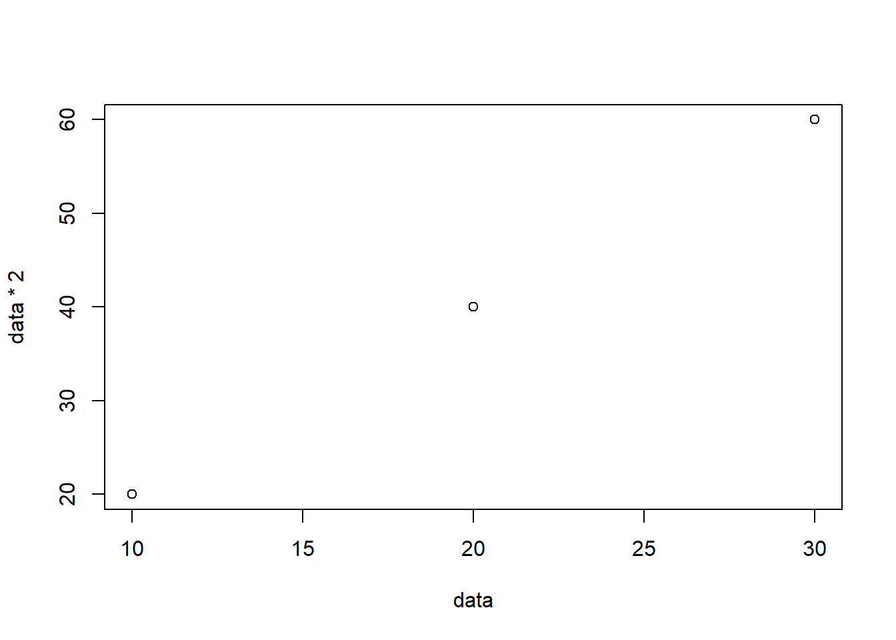

We will have a standard format for our reports in this class. You can find Markdown help online. Feel free to include multiple charts, but clearly label them and refer to them in your text.
The first section should have your title and introduction paragraph. It should describe the purpose of your analysis, the data being used, your main question, and your major finding.
Your major finding should clearly state the main results. If needed, use bullet points or numbered lists for clarity. Include any relevant statistics, figures, or visualizations (e.g., “Sales increased by 15% in February” or “the R^2 was 0.45, showing a strong effect”).
Created by Nathan Garrett. Updated 1/1/11
This analysis uses holiday toy sales to test for the existence of Santa Claus. Its data includes holiday toy sales from Amazon.com and Target. If Santa exists, I expect that most holiday gifts would be from the North Pole. However, we see a significant increase in parent gift purchases. This confirms my Grinch hypothesis.

#### 1. Why Santa Claus Does Not Exist
*Created by Nathan Garrett. Updated 1/1/11*
This analysis uses holiday toy sales to test for the existence of Santa Claus. Its data includes holiday toy sales from Amazon.com and Target. If Santa exists, I expect that most holiday gifts would be from the North Pole. However, we see a significant increase in parent gift purchases. This confirms my Grinch hypothesis.
\``` {r echo=FALSE, message=FALSE, warning=FALSE}}
# Do not print out your code! Note that I added \ in front of
# the ``` code to get the code to not render in this document. Use ``` in your documents.
data <- c(10, 20, 30)
plot(x = data, y = data * 2)
\```
The second section should describe your data. Write a short paragraph describing your data, its source, observations, and time period. Mention any assumptions or preprocessing steps taken (e.g., data cleaning, handling missing values). Add a bullet list for your key variables.
Amazon and Target provided three million order records from the 2020-2021 holiday season. Thirty-thousand rows related to Hanukkah were excluded.
Key variables included:
#### 2. Data Description
Amazon and Target provided three million order records from the 2020-2021 holiday season. Thirty-thousand rows related to Hanukkah were excluded.
Key variables included:
- **Sale price**: decimal field (in USD)
- **Purchaser**: a 1/0 field indicating if the purchased was a person or Santa
- **Item type**: a character field with the toy type (game, toy, or doll)
- **Sale date**: a datetime fieldDescribe your methods, such as statistical tests or machine learning models. Include a data visualization of your prediction or errors.
The regression model predicted the purchaser field (Santa or a parent). My independent variables included item type, price, and date. Date was converted to a days_until_christmas variable. The model has a R^2 of 0.56. The errrors were appropriate for the model type.
include model output
include a chart showing the results
#### 3. Methods
The regression model predicted the purchaser field (Santa or a parent). My independent variables included item type, price, and date. Date was converted to a days_until_christmas variable. The model has a R^2 of 0.56. The errrors were appropriate for the model type.
*include model output*
*include a chart showing the results*Mention any limitations or constraints of the analysis. Suggest areas for further investigation or analysis.
This analysis did not account for external factors such as market competition or economic conditions, which could influence sales performance. Future research could incorporate these factors to enhance the model’s accuracy.”
#### 4. Limitations
This analysis did not account for external factors such as market competition or economic conditions, which could influence sales performance. Future research could incorporate these factors to enhance the model’s accuracy."List any sources, datasets, or tools used in the analysis.
Sources included:
#### 5. References
Sources included:
- Amazon.com company Sales Database, Q1 2024. Available at [Github](http://github.com/amazon)
- ChatGPT was used to generate code for the 2nd plot, as well as debug an error with the dataset.Here are some good examples of well-designed reports.